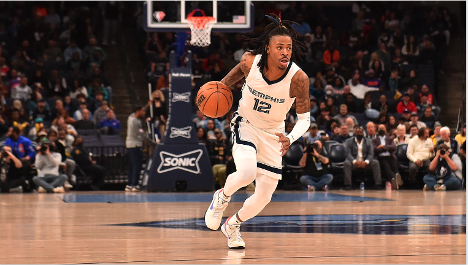

You play basketball with 4 others players on the court, and working with them begins by learning how ot pass the ball properly to them. To practice passing in basketball, master the following:
Work with your teammates and pass the ball to them based on their strengths. If you have a tall teammate, pass the ball using an overhead pass or any pass which gets the ball around the height of his head. That way, it will be hard for the defense to steal the ball. In situations where the defense swarms you, use a bounce or chest pass, as elevating the ball in these situations will make it easier fo the defense to get the ball from you.

Back to Home